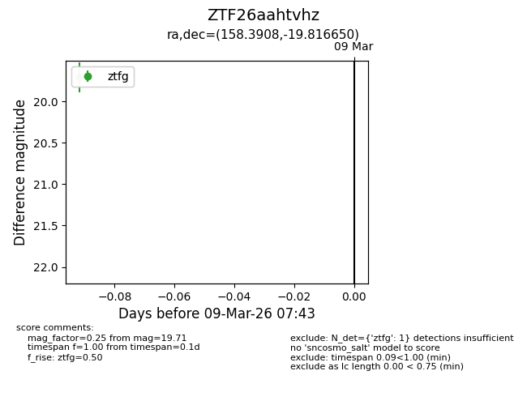
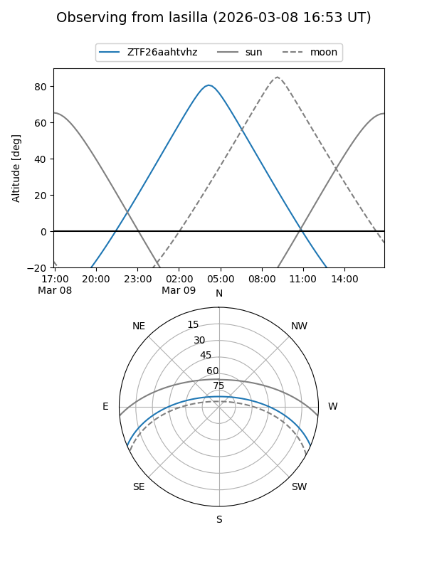
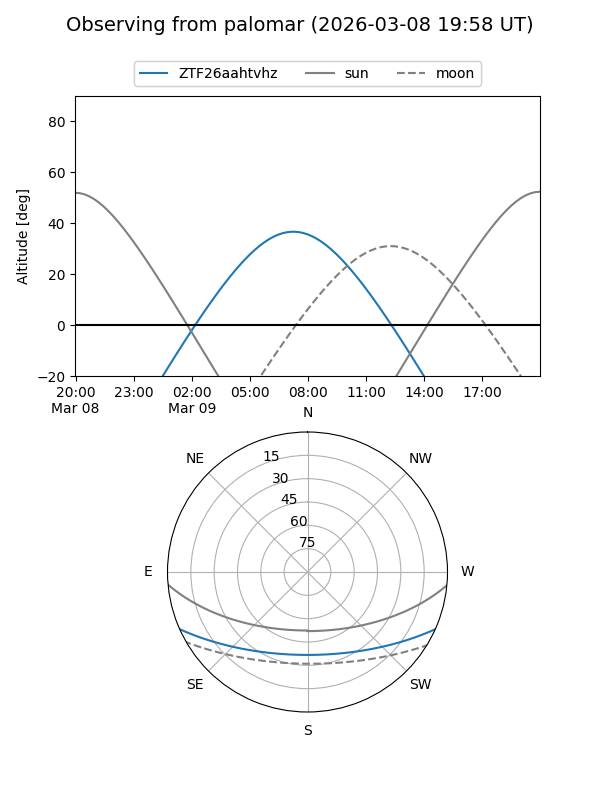

ZTF26aahtvhz
Target ZTF26aahtvhz at 2026-03-09 07:44
Aliases and brokers:
FINK: link
Lasair: link
ALeRCE: link
alt names
ZTF26aahtvhz (ztf,fink_ztf)
Coordinates:
equatorial (ra, dec) = 158.3908,-19.81665
equatorial (HMS+DMS) = 10:33:33.78,-19:48:59.94
galactic (l, b) = (263.8411,+32.39164)
Flags:
Photometry:
last ztfg=19.71
1 ztfg detections
Lightcurve

Visibility


Additional plots